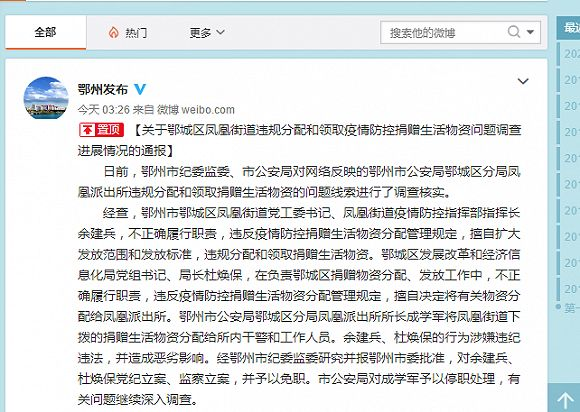

违规分配捐赠物资 鄂州鄂城区多人被查
原文链接 备份链接 【财新网】（记者 周泰来 实习记者 陈丽金）湖北鄂州市一派出所违规分配和领取捐赠生活物资导致多人被查。2月22日，鄂州市政府官网通报，日前鄂州市纪委监委、市公安局对网络反映的鄂州市公安局鄂城区分局凤凰派出所违规分配和领 …
图片来源：视觉中国
“
网络上日前流传一则湖北鄂州地方派出所民警分发捐赠慰问物资的视频引发关注。
”
网络上日前流传一则湖北鄂州地方派出所民警分发捐赠慰问物资的视频引发关注，鄂州市新型冠状病毒感染肺炎疫情防控指挥部2020年2月21日晚通报，涉事派出所所长已被停职，另有两名官员被免职。
据媒体报道，日前有网友在自己朋友圈内晒出一段水果和蔬菜的视频，并称“我老公派出所几索彪（厉害、牛逼之意）了，这个水果4箱子，今天又发了这么多菜，这菜都是他们凤凰派出所发的，这水果4箱，我拿了3箱回去给家里人。”视频画面显示，在女子面前摆放的泡沫箱里，堆满了芒果和木瓜，旁边还有各色蔬菜——大白菜、红菜苔、金针菇、木耳等，还有一盒鸡蛋。

网友所发视频截图。
此事在网络上引发关注后，鄂州市新型冠状病毒感染肺炎疫情防控指挥部宣传组2月19日回应称，网民在微信朋友圈晒鄂城区公安分局凤凰派出所民警分发水果、蔬菜的视频，引发高度关注，“我们感谢网友们对鄂州捐赠慰问工作的监督，将组织全面、深入的调查，如发现违规违纪行为，无论涉及任何单位、任何个人，绝不姑息，坚决严肃处理。”
2月20日凌晨，鄂州市疫情防控指挥部再次通报称，2月19日晚，鄂州市纪委监委迅速成立专班，立即对鄂州市捐赠慰问物资分配、使用情况进行全面介入、深入调查，如发现违规违纪违法问题，无论涉及任何单位、任何个人，绝不姑息，坚决依法依纪依规严肃处理。
2月21日晚，鄂州市疫情防控指挥部通报了此次事件调查结果。通报称，经查，鄂州市鄂城区凤凰街道党工委书记、凤凰街道疫情防控指挥部指挥长余建兵，不正确履行职责，违反疫情防控捐赠生活物资分配管理规定，擅自扩大发放范围和发放标准，违规分配和领取捐赠生活物资。鄂城区发展改革和经济信息化局党组书记、局长杜焕保，在负责鄂城区捐赠物资分配、发放工作中，不正确履行职责，违反疫情防控捐赠生活物资分配管理规定，擅自决定将有关物资分配给凤凰派出所。鄂州市公安局鄂城区分局凤凰派出所所长成学军将凤凰街道下拨的捐赠生活物资分配给所内干警和工作人员。
通报称，余建兵、杜焕保的行为涉嫌违纪违法，并造成恶劣影响。经鄂州市纪委监委研究并报鄂州市委批准，对余建兵、杜焕保党纪立案、监察立案，并予以免职。市公安局对成学军予以停职处理，有关问题继续深入调查。

鄂州市疫情防控指挥部还表示，网络反映的凤凰派出所“民警”为凤凰派出所从凤凰街道菜园头村借用的治安员，系普通群众。疫情防控期间，其参与留观隔离点值守工作，所领水果、蔬菜系成学军安排分配。
此外，微信用户“与石俱进”2月19日在微信群内自称其亲戚是当官的，并称“我们家圣女果是跟凤凰派出所是一批的”“冒得发，别人送的”“反正我家里也是吃不完”等言论。
鄂州市疫情防控指挥部通报，经查，该用户姓名严某华，男，48岁、鄂州市燕矶镇人，燕矶某个体小酒厂负责人。2019年底，严某华被人拉入“开心驿站”微信群，2020年2月19日，看到涉鄂城区公安分局凤凰派出所视频里的圣女果和他买的小西红柿差不多，就想在群内炫耀一下，发布了上述言论和图片。
据其交待，发帖“本意是聊得好玩，想吸引别人的眼球”，图片中的小西红柿是在燕矶中百超市购买，食用油和大米是在当地一家粮油店购买，口罩是网上截屏的，其妻子为家庭妇女，有三个小孩，两个小孩在读书，一个小孩只有2岁，其亲属中均没有公务人员。
鄂州市疫情防控指挥部称，目前，公安机关已对其进行了批评教育。
未经授权 禁止转载

原文链接 备份链接 【财新网】（记者 周泰来 实习记者 陈丽金）湖北鄂州市一派出所违规分配和领取捐赠生活物资导致多人被查。2月22日，鄂州市政府官网通报，日前鄂州市纪委监委、市公安局对网络反映的鄂州市公安局鄂城区分局凤凰派出所违规分配和领 …
原文链接 备份链接 澎湃新闻综合报道 此前，一女子在朋友圈晒出一段水果和蔬菜的视频。“我老公派出所的几嗦彪（厉害、牛）啊，这个水果4箱子，今天又发了这么多菜，这菜都是他们凤凰派出所发的，这水果4箱，我拿了3箱回去给家里人。”该视频引起网友 …
原文链接 备份链接 2月7日15时，国务院联防联控机制召开新闻发布会，介绍进一步做好重点地区疫情防控工作、提高收治率治愈率和降低感染率病死率等相关情况。现在建立了16个省支援武汉以外地市的一一对口支援关系，以一省包一市的方式，全力支持湖 …
原文链接 备份链接 *************▲*************2020年1月24日，除夕夜，武汉大学中南医院重症医学科的医护人员坚守岗位。在病房外的办公室里，他们简单地吃了一顿工作餐，当作年夜饭，随即换装上岗，继续奋战在抗击 …
原文链接 备份链接 经济观察网 见习记者 程璐洋 2月4日，经济观察网从湖北省新型冠状病毒感染肺炎疫情防控指挥部和湖北省卫生健康委员会获悉，湖北省红十字会、慈善总会和青少年发展基金会3家机构接收的非定向捐赠医疗防控物资分配方案明确。 湖北 …